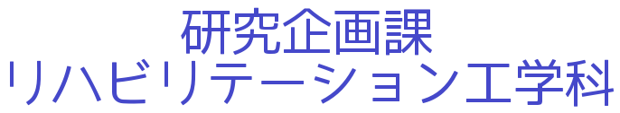
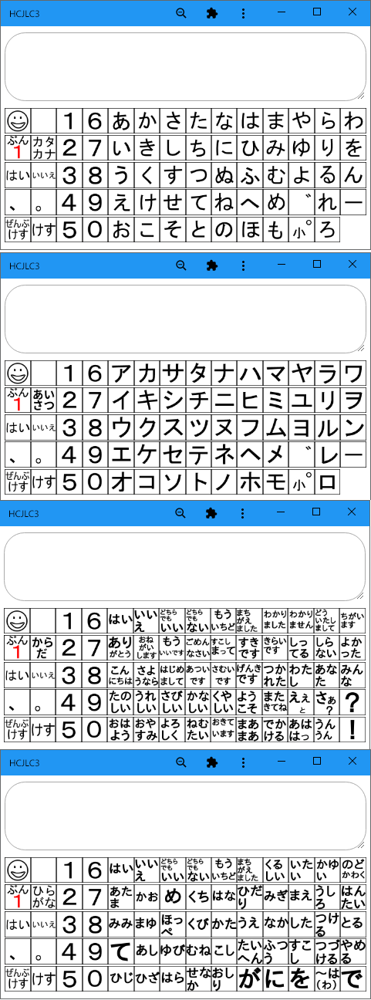
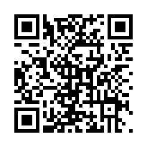
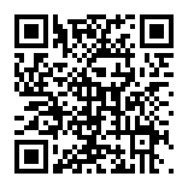
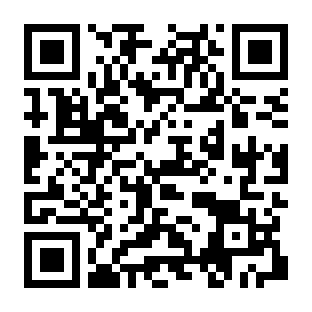

ようこそおいでくださいました
富山県リハビリテーション病院・こども支援センター
テクノエイド人材育成部

開設：２００３年５月１５日 最終更新：２０２２年１０月４日
このホームページはさまざまな不自由をもって生活する人たちとそのご家族、またこの人たちを医療や福祉の場面で支援する方々が直面するいくつかの問題に対して、工学や技術を利用して解決のお手伝いをするために作りました。ここで記されていることのほとんどが当院での取り組みが下地となっています。
しかしこの文章をお読みのみなさんが、ここに記されていることをそのまま実行されても、期待される結果を生み出さないばかりか、予想外の悪い結果がおこることも十分考えられます。あらかじめこのことをご承知いただき、ここに記載されている内容のお取り扱いには十分にご注意ください。当方はここに記載してある内容によりもたらされるいかなる結果について保証も補償もいたしません。この文章をお読みのみなさんの責任の範囲内で、参考にしていただければ幸いです。
このページから始まる一連の記載事項を許可なく転載することを禁じさせていただきます。理由はただここに記載されている内容によって起こるかも知れない、トラブルや事故を未然に防ぎたいと考えるからです。どうぞよろしくお願いいたします。その代わり、リンクされるのもはずされるのもご自由にされて結構です。

Web文字盤はお手持ちの情報機器を使って誰でも利用できる無料のコミュニケーションエイドです。
パソコンは、Windows、Mac、Linux で、スマホは、Android、iPhone で、タブレットは、Android、iPad のどれでも使用できます。ブラウザは最新のchromeの使用をお勧めします。
Web文字盤はインストールせずにオンラインでも使用できます。またインストールすればオフライン（インターネットの使えない場所）でも使用できます。もちろんその際、通信費用はかかりません。
ここでご紹介する『Web文字盤４』は、画面をクリックまたはタップして操作します。文字盤は左の4種類を切り替えて使用できます。また作った文を読み上げできます。また保存できる文書が10種類のものと20種類のものを用意しました。
すでにご存じの方は下のリンクからお入りください。
Web 文字盤４ 文章10種類
Web 文字盤４ 文章20種類

また基本的な使い方やインストール、アンインストールの方法をお知りになりたい方は、Web 文字盤 ７ オフラインWebアプリ 通常の使い方とインストールアンインストールの方法 をご覧ください。
このほか、Web文字盤に関する記事がたくさんありますのでどうぞご自由にご覧ください。
追記（2022/10/04）
一部のよりワイドな画面をもつタブレットでは、画面の下部分が欠けて表示されることがわかりました。このような場合には、下記の改良版をご使用ください。
Web 文字盤４改 文章10種類

Web 文字盤４改 文章20種類

最近の更新
このページのやや上にWeb 文字盤の改良版を二種類公開しました。（2022/10/04）
スマホとタブレットに もっとかんたんにスマホで電話をかける方法 ３ 電話をかける方法のつくりかた を公開しました。（2022/09/29）
スマホとタブレットに もっとかんたんにスマホで電話をかける方法 ２ あんしんをつくる を公開しました。（2022/09/16）
スマホとタブレットに もっとかんたんにスマホで電話をかける方法 １ を公開しました。（2022/09/09） 追記しました。（2022/09/14）
WebToyに 障害をもつこどもたちのためのおもちゃ ２０ いぬははしるのがすき を公開しました。（2022/07/29）
WebToyに 障害をもつこどもたちのためのおもちゃ １９ サウンドスイッチの機能拡張 声で複数のスイッチを使い分けるにはどうしたらいいか を公開しました。（2022/07/29）
その他に らくらくマウスの修理 右クリックできない を公開しました。（2022/07/27）
WebToyに 障害をもつこどもたちのためのおもちゃ １８ いぬもあるけば を公開しました。（2022/07/15）
WebToyに 障害をもつこどもたちのためのおもちゃ １７ サウンドスイッチの機能拡張 できるかな？？声で複数のスイッチを使い分ける を公開しました。（2022/07/08）
WebToyに 障害をもつこどもたちのためのおもちゃ １６ サウンドスイッチができるまで を公開しました。（2022/06/23）
WebToyに 障害をもつこどもたちのためのおもちゃ １５ サウンドスイッチ こえをかけるとへんじするしろいいぬ を公開しました。（2022/06/10）
WebToyに 障害をもつこどもたちのためのおもちゃ １４ ースワイプのつくりかたー を公開しました。（2022/05/20）
WebToyに 障害をもつこどもたちのためのおもちゃ １３ さらにいぬとあそぼう
ーあっちをむいたりこっちをむいたりー を公開しました。（2022/05/13）
WebToyに 障害をもつこどもたちのためのおもちゃ １２ 楽しい犬の飼い方と育て方 その２
ーいぬがでてきてワンとなくおもちゃのたのしいつくりかたーアニメーションを動かしましょう を公開しました。（2022/04/08）
車いすに 大きな人には大きな車いす を公開しました。（2022/03/28）
WebToyに 障害をもつこどもたちのためのおもちゃ １１ 楽しい犬の飼い方と育て方 その１
ーいぬがでてきてワンとなくおもちゃのたのしいつくりかたー を公開しました。（2022/03/28）
WebToyに 障害をもつこどもたちのためのおもちゃ １０ もっといぬとあそぼう だれでもあそんでかまいません を公開しました。（2022/03/04）
WebToyに 障害をもつこどもたちのためのおもちゃ ９ いぬとあそぼう を公開しました。（2022/02/18）
WebToyに 障害をもつこどもたちのためのおもちゃ ８ ぐるぐる その３ てづくりでいきましょう を公開しました。（2022/01/14）
WebToyに 障害をもつこどもたちのためのおもちゃ ７ ぐるぐる その２ すごろくをしよう を公開しました。（2021/12/17）
WebToyに 障害をもつこどもたちのためのおもちゃ ６ ぐるぐる その１ を公開しました。（2021/12/09）
Web文字盤に Web 文字盤 １５
オフラインWebアプリの
キャッシュストレージ上限と
発生する不具合と対処のヒント
第二回 を公開しました。（2021/11/18）
Web文字盤に Web 文字盤 １４
オフラインWebアプリの
キャッシュストレージ上限と
発生する不具合と対処のヒント
第一回 を公開しました。（2021/11/12）
WebToyに 障害をもつこどもたちのためのおもちゃ ５ ボールなげ その２ を公開しました。（2021/10/29）
WebToyに 障害をもつこどもたちのためのおもちゃ ４ ボールなげ を公開しました。（2021/09/10）
●車いす（当院の車いすの保守管理と改良の記録です）
●ナースコールスイッチ （通常のナースコールスイッチの操作が困難な方向けのスイッチです）
●コミュニケーションエイド（通常の方法では意思伝達が困難な方向けの道具です）
○WebToy （html css JavaScript でもおもちゃをつくる）
- WebToy １ おもちゃの取り組み (2020/06/12 公開)
- WebToy ２ その次 どうするか (2020/06/26 公開)
- WebToy ３ すこし発展 (2021/01/22 公開)
- 障害をもつこどもたちのためのおもちゃ １ (2021/04/30 公開)
- 障害をもつこどもたちのためのおもちゃ ２ つみき (2021/05/21 公開)
- 障害をもつこどもたちのためのおもちゃ ３ ボールころがし (2021/07/16 公開)
- 障害をもつこどもたちのためのおもちゃ ４ ボールなげ (2021/09/10 公開)
- 障害をもつこどもたちのためのおもちゃ ５ ボールなげ その２ (2021/10/29 公開)
- 障害をもつこどもたちのためのおもちゃ ６ ぐるぐる その１ (2021/12/09 公開)
- 障害をもつこどもたちのためのおもちゃ ７ ぐるぐる その２ すごろくをしよう (2021/12/17 公開)
- 障害をもつこどもたちのためのおもちゃ ８ ぐるぐる その３ てづくりでいきましょう (2022/01/14 公開)
- 障害をもつこどもたちのためのおもちゃ ９ いぬとあそぼう (2022/02/18 公開)
- 障害をもつこどもたちのためのおもちゃ １０ もっといぬとあそぼう だれあでもあそんでかまいません (2022/03/04 公開)
- 障害をもつこどもたちのためのおもちゃ １１ 楽しい犬の飼い方と育て方 その１ ーいぬがでてきてワンとなくおもちゃのたのしいつくりかたー (2022/03/28 公開)
- 障害をもつこどもたちのためのおもちゃ １２ 楽しい犬の飼い方と育て方 その２ ーいぬがでてきてワンとなくおもちゃのたのしいつくりかたーアニメーションを動かしましょう (2022/04/08 公開)
- 障害をもつこどもたちのためのおもちゃ １３ さらにいぬとあそぼう ーあっちをむいたりこっちをむいたりー (2022/05/13 公開)
- 障害をもつこどもたちのためのおもちゃ １４ ースワイプのつくりかたー (2022/05/20 公開)
- 障害をもつこどもたちのためのおもちゃ １５ サウンドスイッチ こえをかけるとへんじするしろいいぬ (2022/06/10 公開)
- 障害をもつこどもたちのためのおもちゃ １６ サウンドスイッチができるまで (2022/06/23 公開)
- 障害をもつこどもたちのためのおもちゃ １７ サウンドスイッチの機能拡張 できるかな？？声で複数のスイッチを使い分ける (2022/07/08 公開)
- 障害をもつこどもたちのためのおもちゃ １８ いぬもあるけば (2022/07/15 公開)
- 障害をもつこどもたちのためのおもちゃ １９ サウンドスイッチの機能拡張 声で複数のスイッチを使い分けるにはどうしたらいいか (2022/07/29 公開)
- 障害をもつこどもたちのためのおもちゃ ２０ いぬははしるのがすき (2022/07/29 公開)
○Web文字盤 （html css JavaScript でコミュニケーションエイド）
- Web 文字盤 １ Android の EVA Facial Mouse でも使えます (2019/6/7 公開)
- Web 文字盤 ２ ワイドモニターでの見やすさを改善しました (2019/6/21 公開)
- Web 文字盤 ３ あいさつ文字盤とからだ文字盤を追加しました (2019/7/12 公開)
- Web 文字盤 ４ オフラインWebアプリへの道 (2019/7/26 公開)
- Web 文字盤 ５ 文章読み上げ機能を追加しました (2019/11/8 公開)
- Web 文字盤 ６ 読み上げ機能付きWeb文字盤にオフラインWebアプリ機能をつけました (2019/11/15 公開)
- Web 文字盤 ７ オフラインWebアプリ 通常の使い方とインストールアンインストールの方法 (2020/02/07 公開)
- Web 文字盤 ８ 番外編 パソコンとAndroidにおけるJavaScriptの違いと不具合の対策 (2020/02/21 公開)
- Web 文字盤 ９ タブレットの準備OK (2020/02/28 公開)
- Web 文字盤 １０ マルチWeb文字盤 (2020/04/17 公開)
- Web 文字盤 １１ タブレット三兄弟 (2020/05/01 公開)
- Web 文字盤 １２ 「ぜんぶけす」の改善 (2020/05/22 公開)(2020/07/09 追加)
- Web 文字盤 番外編 とやま弁文字盤の開発 (2020/06/19 公開)
- Web 文字盤 番外編その２ 小さなお客さんがWeb文字盤を試しました (2021/02/05 公開)
- Web 文字盤 １３ オフラインでPWA、Web文字盤やWebToyを使用した際に効果音の音声ファイルが再生されない問題と その暫定的解決方法 (2021/08/24 公開)(2021/09/02 追記)
- Web 文字盤 １４ オフラインWebアプリのキャッシュストレージ上限と発生する不具合と対処のヒント第一回 (2021/11/12 公開)
- Web 文字盤 １５ オフラインWebアプリのキャッシュストレージ上限と発生する不具合と対処のヒント第二回 (2021/11/18 公開)
- Web 文字盤 モニター調査 第1回 準備 (2020/08/21 公開)
- Web 文字盤 モニター調査 第2回 モニター開始 (2020/09/14 公開)
- Web 文字盤 モニター調査 第3回 文字盤の改善 (2020/09/25 公開)
- Web 文字盤 モニター調査 第4回 その人のための文字盤 (2020/10/09 公開)
- Web 文字盤 モニター調査 第5回 文字盤をもっと、ことばをもっと (2020/10/23 公開)
- Web 文字盤 モニター調査 番外編 タブレットが動きません そんな時は... (2020/11/20 公開)
○エンチャントでおもちゃ （enchant.jsでおとなもこどももたのしめるおもちゃつくり）
- エンチャントでおもちゃ (2018/10/5 公開)
- うごくバナナ (2018/10/19 公開)
- バナナをうごかそう (2018/10/26 公開)
- バナナを２ボタンでうごかそう (2018/11/2 公開)
- バナナを１ボタンでうごかそう (2018/11/9 公開)
- ワンスイッチでどこまでできるのか (2018/11/16 公開)
○エンチャント文字盤シリーズ （enchant.jsを利用した次世代型コミュニケーションエイド）
- エンチャント文字盤 (2016/08/18 公開)(2016/08/26 追加)(2016/09/07 追加)(次々追加)
- enchant.jsでVOCAをつくる (2016/06/16 公開)
- ペイントで kotoba1.gif をつくる (2016/06/21 公開)
- Softalk で kotoba1.mp3 をつくる (2016/06/27 公開)
- エンチャント文字盤のつくり方 第零回 (2017/06/09 公開)
- エンチャント文字盤のつくり方 第一回 (2017/06/09 公開)
- エンチャント文字盤のつくり方 第一回その２ (2017/06/16 公開)
- エンチャント文字盤のつくり方 第一回その３ (2017/06/23 公開)(2018/04/18追記)
- エンチャント文字盤のつくり方 第一回その４ (2017/06/30 公開)
- エンチャント文字盤を利用した よく見えない そんな場合の対応 (2017/07/28 公開)
- エンチャント文字盤を利用した よく見えない そんな場合の対応 その２ (2017/09/08 公開)
- エンチャント文字盤を手指運動訓練に利用した事例 (2017/09/22 公開)
- androidタブレットでエンチャント文字盤 （2018/2/9 公開）
- 実験 インターネットなしでエンチャント文字盤ができるか （2018/2/23 公開）
- エンチャント文字盤の音と声 第一回 音の役割と出す方法 （2018/3/16 公開）
- エンチャント文字盤の音と声 第二回 声の役割と出す方法 （2018/3/30 公開）
- エンチャント文字盤の音と声 第三回 WebSpeechAPIをつかうけど Can I use? （2018/4/6 公開）
- 多様なVOCAを自由自在に作る！そんなことできるのか？第１回 録音 （2018/5/25 公開）
- 多様なVOCAを自由自在に作る！そんなことできるのか？第２回 録音 その２ （2018/6/8 公開）
- 多様なVOCAを自由自在に作る！そんなことできるのか？第３回 再生 （2018/6/22 公開）
- 多様なVOCAを自由自在に作る！そんなことできるのか？番外編 サンプルの作り方 （2018/7/20 公開）
- 視線入力ふたたび （2018/7/27 公開）
- エンチャント文字盤に文書保存機能をつける （2018/8/10 公開）
- どうもこれは Chrome ではできないみたいだ オフラインで web speech API を使って任意文字列の読み上げ （2019/2/15 公開）
- エンチャントLCの開発 （2019/4/12 公開）
○しゃべる文字盤シリーズ（エクセルをつかったコミュニケーションエイド。使う人に合わせて改造できます。）
- しゃべる文字盤スキャン BASIC (2013/09/20 公開)
- しゃべる文字盤クリック with AquesTalk （2013/09/18公開）
- レッツチャット練習用 しゃべる文字盤スキャン （2012/09/11公開）
- ネットラジオ聴取、お便り投稿機能付き、しゃべる文字盤スキャン （2013/05/24公開）
○しゃべる文字盤の作り方
- 1 はじめに (2014/05/08 公開)
- 2 WindowsとExcelとVBAとしゃべる文字盤 （2014/05/08 公開）
- 3 BASICとVisualBasicとVBA プログラムについて （2014/05/08 公開）
- 4 エクセルVBA 初学者のための手引き （2014/05/08 公開）
- 5 統合開発環境 VBE （2014/05/21 公開）
- TIPS_1 セルとフォントの表示変更方法 （2014/05/28 公開）
- TIPS_2 音をならす方法 （2014/06/14 公開）
- TIPS_3 キー入力を読み取る方法 （2014/06/14 公開）
- TIPS_4 一定時間を保つ方法 （2014/07/18 公開）
- TIPS_5 合成音声でしゃべる方法 （2014/07/31 公開）
- TIPS_6 エクセルから他のアプリケーションを操作する方法 （2014/10/3 公開）
- おわりに （2014/10/3 公開）
●機器操作支援
●Tobii Eye Tracker 4C で視線入力
●マウス
●目でうごかすマウス 視線入力マウスを作る
●音声認識、手作りのススメ（家庭で手軽に音声認識？ 実は可能なんです）
●離床センサ（簡単な工作でベッドからの離床を検知する工夫です）
○ 月ヶ瀬離床センサ
- はじめに
- 作り方
- 使い方（2004/12/3 追記）
- 補足事項
- 月ヶ瀬離床センサのメンテナンス （2019/07/19 公開）
○ テープスイッチ離床センサの改善 (2019/1/11公開)
○ 離床センサの活用事例 (2019/1/18公開)
●おもちゃの改造（こどもはみんなおもちゃがすきです）
●スマホとタブレット
●試用記
●工作入門
●その他
◎研究／発表
ご意見、ご感想をお待ちしております。メールアドレスはこちら。
上のアドレスは画像表示です。文字を読みとりメールソフトに人力で書き写してください。
迷惑メール対策のためお手間をおかけします。よろしくおねがいいたします。